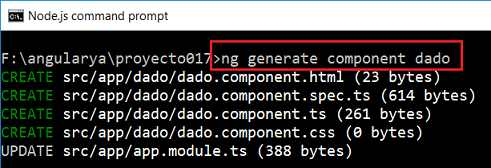
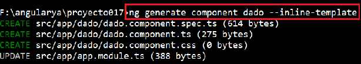
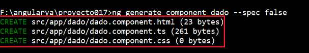
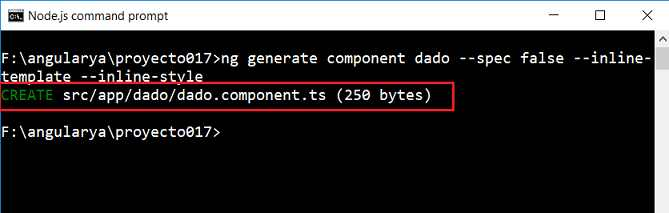

Otro comando que hemos utilizado a lo largo de los primeros conceptos de este curso de Angular es 'generate'.
Mediante el comando 'generate' de la herramienta Angular CLI podemos crear:
Mediante el comando:
ng generate component dado
Se crea una componente 'dado' con los archivos respectivos y la modificación del archivo del módulo:
Se informa en la consola los archivos creados y modificados:
Podemos pasar varias opciones cuando creamos la componente:
ng generate component dado --inline-style
Evita que se cree el archivo dado.component.css
Lo mismo podemos evitar que se cree el archivo HTML:
ng generate component dado --inline-template
Tenemos como resultado la no creación del archivo HTML:
Podemos definir el prefijo para la componente mediante la opción --prefix (alias: -p):
ng generate component dado --prefix juego
Luego la componente que se crea tiene dicho prefijo:
import { Component, OnInit } from '@angular/core';
@Component({
selector: 'juego-dado',
templateUrl: './dado.component.html',
styleUrls: ['./dado.component.css']
})
export class DadoComponent implements OnInit {
constructor() { }
ngOnInit() {
}
}
Si queremos definir el nombre completo para el selector tenemos la opción --selector:
ng generate component dado --selector ju-dado
Luego la componente se crea con dicho nombre de selector:
import { Component, OnInit } from '@angular/core';
@Component({
selector: 'ju-dado',
templateUrl: './dado.component.html',
styleUrls: ['./dado.component.css']
})
export class DadoComponent implements OnInit {
constructor() { }
ngOnInit() {
}
}
Para almacenar la componente en un determinado módulo debemos utilizar la opción --module (alias: -m)
ng generate component elementos/dado --module elementos
Considerando que ya hemos creado un módulo llamado elementos (ng generate module elementos) estamos creando la componente dado en el modulo elementos.
Para evitar que se cree el archivo 'dado.spec.js' debemos insertar el comando --spec con el valor false:
ng generate component dado --spec false
Luego no se genera el archivo 'dado.spec.js':
Tengamos en cuenta que todas estas opciones se pueden combinar y ejecutar en forma simultanea, por ejemplo si queremos generar solo el archivo *.ts de la componente y que no genere el archivo spec, *.css y *.html:
ng generate component dado --spec false --inline-template --inline-style
Otras opciones posibles cuando creamos una componente son:
Angular CLI permite ingresar comandos en formato resumido utilizando el primer caracter:
ng g c dado
En lugar de escribir:
ng generate component dado
Mediante el comando:
ng generate service articulos
Se crea una clase ArticulosService y se inyecta a nivel de 'root':
import { Injectable } from '@angular/core';
@Injectable({
providedIn: 'root'
})
export class ArticulosService {
constructor() { }
}
Disponemos de los siguientes opciones en este comando:
Mediante el comando:
ng generate module administracion
Se crea la carpeta 'administracion' y dentro de ella el archivo 'administracion.module.ts'.
import { NgModule } from '@angular/core';
import { CommonModule } from '@angular/common';
@NgModule({
imports: [
CommonModule
],
declarations: []
})
export class AdministracionModule { }
Disponemos de los siguientes opciones en este comando:
Mediante el comando:
ng generate pipe letras
Se genera el archivo 'letras.pipe.ts':
import { Pipe, PipeTransform } from '@angular/core';
@Pipe({
name: 'letras'
})
export class LetrasPipe implements PipeTransform {
transform(value: any, args?: any): any {
return null;
}
}
Disponemos de los siguientes opciones en este comando:
Mediante el comando:
ng generate class articulo
Se crea el archivo 'articulo.ts':
export class Articulo {
}
Mediante el comando:
ng generate interface venta
Se crea el archivo 'venta.ts':
export interface Venta {
}
Mediante el comando:
ng generate enum operaciones
Se crea el archivo 'operaciones.enum.ts':
export enum Operaciones {
}